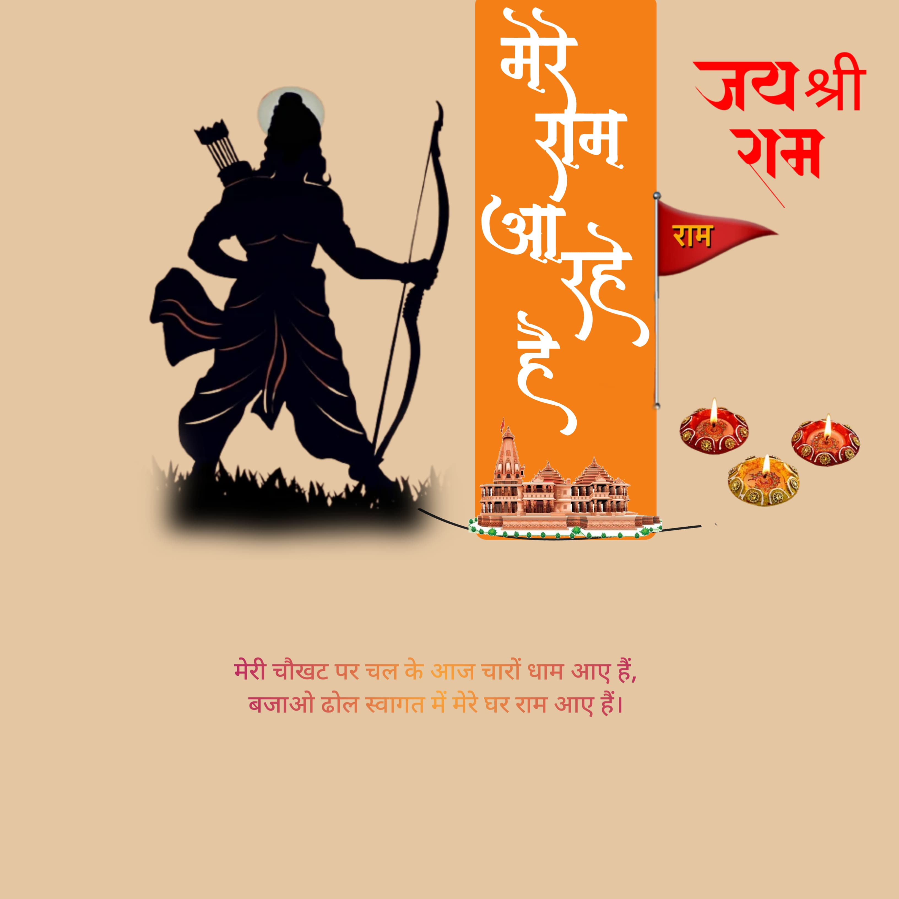
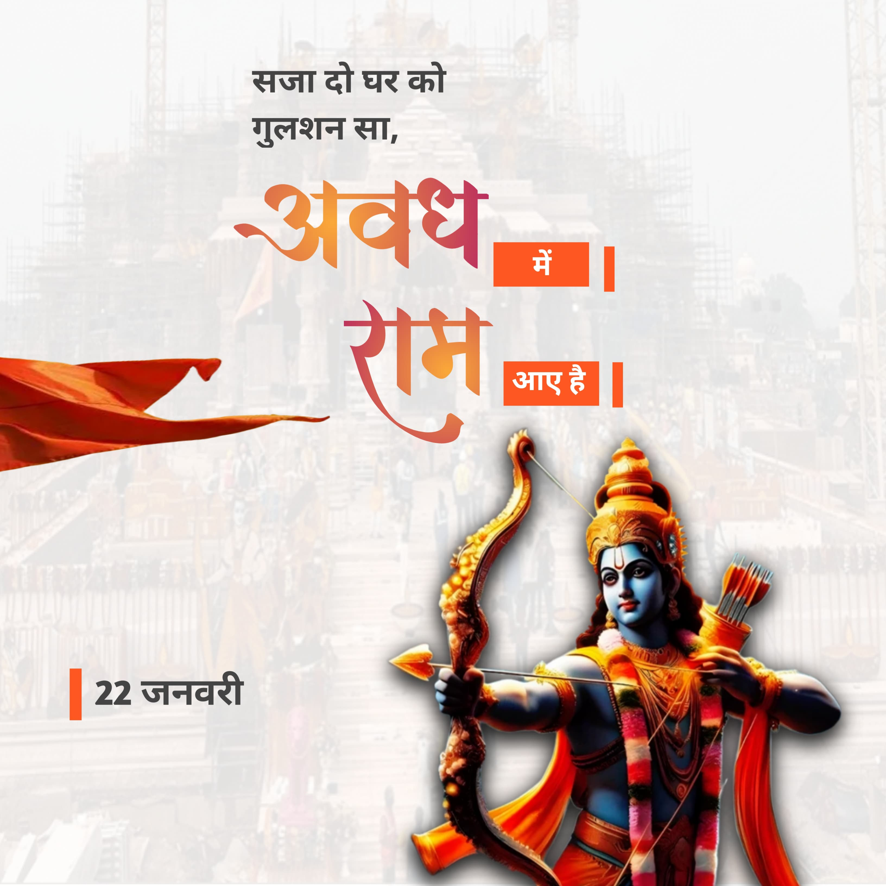

500 वर्षो की प्रतीक्षा के बाद एवं कई कार सेवको के बलिदान के बाद श्री रामलला की प्राण प्रतिष्ठा का शुभ अवसर आया है|
इस अवसर को और भी खास बनाने और सभी सनातनी बंधुओ को शुभकामनाए देने के लिए (अपने business logo और फोटो के साथ) देने के लिए रामलला की प्राण प्रतिष्ठा का poster बनवाए वो भी free.
poster बनवाने के लिए दिए whatsapp link पर click कर अपनी details डाले|
-राम भक्त